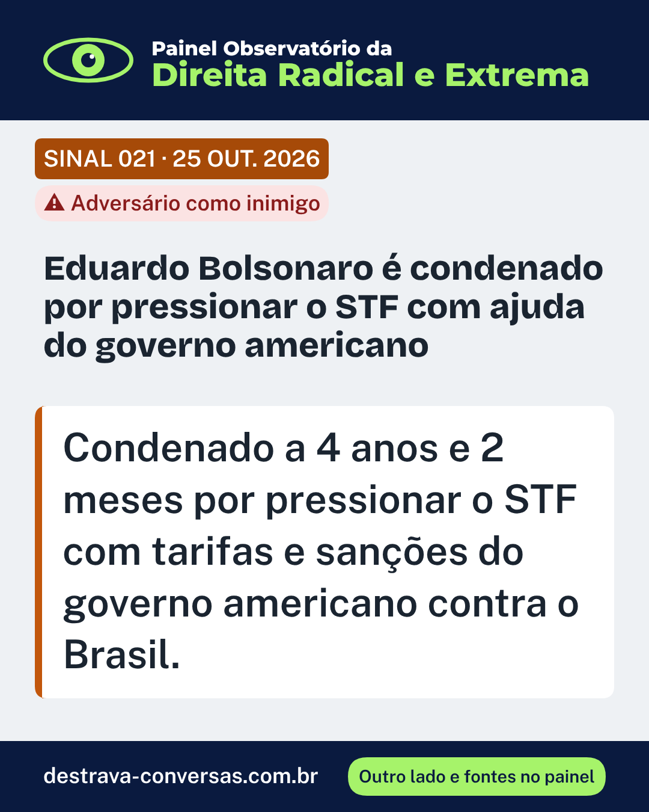

Eduardo Bolsonaro é condenado por pressionar o STF com ajuda do governo americano
Condenado a 4 anos e 2 meses por pressionar o STF com tarifas e sanções do governo americano contra o Brasil.
Em 16 de junho de 2026, a Primeira Turma do STF condenou Eduardo Bolsonaro, por unanimidade, a 4 anos e 2 meses em regime semiaberto, por coação no curso do processo. Segundo a acusação, ele atuou junto ao governo dos EUA por tarifas contra o Brasil, suspensão de vistos de autoridades e sanções contra o ministro Alexandre de Moraes, para pressionar o julgamento do pai. Também ficou inelegível por oito anos.
Outro lado: A defesa argumentou que ele não é autor das sanções e que suas falas são liberdade de expressão e atividade parlamentar. Eduardo chamou o processo de “caça às bruxas”.
Fontes: Agência Brasil (via Bonde); Agência Brasil; CNN Brasil

